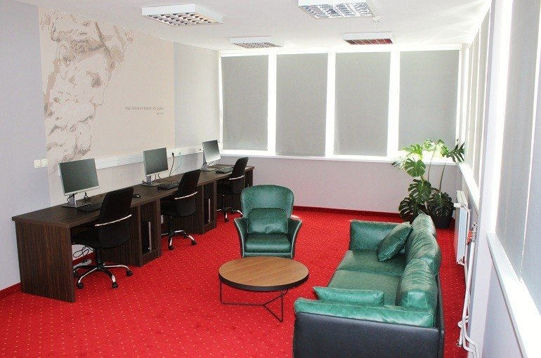

Every GoatConf is shaped by who joins it. Add a meetup, a party, a walk or a workshop: you run it, and once we accept it, it is part of GoatConf 2027.
What people are adding
Every event here is part of GoatConf 2027: we accepted it, and it follows the charter and the code of conduct. Each host runs their own event and pays for it directly. Open one to see when and where, and how to join.
Pick what. A meetup, a party, a walk, a dinner, anything. Small is fine: ten people round a café table is an event.
Pick when. Any day from 2 to 6 June 2027. The evenings are free, and so is Saturday, the community's day. On Thursday and Friday you can also use an hour off between sessions: Thursday at 11:00, 13:00 and 15:00, and Friday at 10:30 and 14:30. Friday at 12:30 stays free for Džuma and lunch.
Pick where. Any place you like: the ones below are ideas. Ask the place yourself, since GoatConf has arranged nothing with them.
Plan the people. Free events lose up to half of the people who sign up, so plan for that and keep a waiting list. Say clearly what is accessible and what is not.
Propose it. Fill in the short form. We read every proposal, may ask for changes, and write back either way. Once we accept it, it goes on this page and on the program.
On the day, arrive early, put up a sign, and have a plan for rain: June is Tuzla's wettest month. Ask before you record anyone.
An event in an hour off is short, free and open to everyone who comes. It is near IPI Academy, so people can walk there and back, and it ends five minutes before the next session starts. Nothing runs at the same time as a session.
Before you book a place
How many people does it hold, and is the room yours for the whole time?
Is there step-free access and an accessible toilet?
What does it have: chairs, tables, a screen, sound, power for laptops?
What does it cost, and what happens if you cancel?
Does it sell food and drink, or can people bring their own?
Can you visit it before the day?
Tuzla's rules
An event inside a café, a hotel or a hall follows that place's rules. A free event for culture or fun is not reported to the police, unless its size calls for extra safety: then tell the local police station at least five days ahead. An event that charges for entry is reported at least seven days ahead. When in doubt, ask the place, or ask us.
What you could run
More than one of each is welcome: a second meetup, another hike, a dinner every night. Pick one to see the places that suit it.
Places a host could ask, from cafés on Freedom Square to halls for a few hundred people. GoatConf has arranged nothing with them: you ask, you book and you pay. Three are marked "Ask GoatConf first", because we may use them for our own program.
11

Student HUB @ipia
IPI Academy's student hub
Kulina bana 2, inside IPI Academy. About 50 m from IPI Academy.
Study or tech spaceIndoorsFits an hour offAsk GoatConf first
A space in IPI Academy where students develop their ideas and business plans for free, with modern equipment and mentoring. The academy also has an active student club.
A designed space for students; capacity is not published.
Good for workshops, hackathons and meetups.
GoatConf may use this place for its own program. Write to us before you plan here.
A steak and wine restaurant on Freedom Square, to the left of the fountain, in an Austro-Hungarian building with a candlelit cellar. No group or event terms are published.
A restaurant with a candlelit cellar; capacity is not published.
The square outside IPI Academy, where the hours off are spent and the tourist train leaves for the lakes. A meeting point for walks and trips; an event on the square itself needs the city's rules.
The city's main square.
Good for community trips, hikes and something else.
The canton's main museum, with about 30,000 objects in archaeology, ethnology, history, art and natural history. It shows thematic exhibitions in its own building and is open to visitors on weekdays from 10:00 to 15:00; no room hire is advertised.
A ground-floor exhibition space for thematic exhibitions; no room size or seat count is published.
Trg žrtava genocida u Srebrenici 2, old town. About 250 m from IPI Academy, from the street.
RestaurantIndoorsFits an hour off
A traditional Bosnian restaurant styled as an old Bosnian house, often the first stop for tourists, with Bosnian food, coffee, boza and sevdalinka music. It serves no alcohol.
Turalibegova 1 (Kapija). About 350 m from IPI Academy.
CaféIndoorsFits an hour off
A gaming café of the Friendly Fire chain where staff find visitors people to play with. It is open from noon to midnight, and to 02:00 on Fridays and Saturdays, and takes reservations and birthday parties by message.
A gaming café with 25 PCs, according to a third-party listing; capacity is not published.
Hadžibakirbega Tuzlića 8a. About 450 m from IPI Academy, from the street.
Bar or pubIndoors
A rock and metal café-bar with craft beer that hosts frequent gigs, mostly rock, as well as regular pub quizzes, stand-up comedy and exhibitions. The Tuzla Live association books concerts there, most recently on 19 March 2026.
Capacity is not published.
Good for evening events, meetups and something else.
Turalibegova 13, in the City Park. About 450 m from IPI Academy.
Bar or pubIndoors and out
A bar in the City Park, on the site of the former Urban BeaTZ, known for a busy programme of gigs and parties, quizzes, karaoke evenings, thrift markets and board-game get-togethers. A festival karaoke party ran there on 31 May 2024; no current schedule is published, so ask the bar for a night.
A bar in the City Park; capacity is not published. The article's photos show a garden terrace.
Good for karaoke, evening events, meetups and something else.
Bosne Srebrene bb, Mejdan, west of the centre. About 800 m from IPI Academy.
Cultural houseIndoors
The city-owned hall for sport, concerts and fairs, with a bowling alley, exhibition rooms and business rooms to let. It hosted a team quiz for the Coffee and Chocolate Fair in May 2026.
A large university hall, a small sports hall, a bowling alley and exhibition and business rooms, 16,500 m² under cover; no seat counts are published.
Good for evening events, something else and meetups.
Maršala Tita 2. About 900 m from IPI Academy, from the street.
RestaurantIndoors
A restaurant and café with a long aquarium that offers itself for graduation and birthday parties, business meetings and gatherings of friends, booked by phone. It is open Monday to Saturday, 07:00 to 23:00.
Dragiše Trifkovića 2. About 1.1 km from IPI Academy.
Cultural houseIndoors
Any association or informal group of young people may use its rooms, for concerts of popular and classical music, festivals, conferences and cultural and entertainment events.
A chamber stage and halls; no seat counts are published.
Good for evening events, karaoke, meetups and workshops.
Šetalište Slana banja bb, in Slana banja park. About 1.2 km from IPI Academy.
Cultural houseIndoors
A house in the park above the lakes, run by a citizens' association, that organises concerts, plays, celebrations and workshops. The house has no right angles and good acoustics.
The wine bar and club in the basement of Hotel Tuzla
ZAVNOBiH-a 13, basement of Hotel Tuzla. About 1.5 km from IPI Academy.
Bar or pubIndoors
A wine bar and night club in the basement of Hotel Tuzla, open Friday to Sunday from 18:00 to 03:00, with DJ nights in October 2026 and the University of Tuzla freshers' party on 13 November 2026.
The Tourist Board gives Vinoteka Madeira 50 seats; the club's own capacity is not published.
Mije Keroševića Guje 3. About 1.7 km from IPI Academy.
Cultural houseIndoors
The canton's big cultural centre, with published 2026 prices from 150 KM for the small room for three hours. Non-profit programmes under a signed cooperation agreement pay no fee.
A 603-seat hall, the 127-seat Blue Hall with sound and a projector, a 30-seat room, two galleries and a 150-seat chamber stage.
Good for evening events, workshops, meetups, live podcasts and hackathons.
Bingo City Center, Mitra Trifunovića Uče 2. About 1.9 km from IPI Academy.
Cultural houseIndoors
CineStar rents a whole hall for a private screening from 180 KM, booked online at least four days ahead, and runs company screenings priced by hall size. The same mall has a 12-lane bowling alley with pool tables and table football.
Five cinema halls, with private screenings for up to 45 people at weekends and 20 on some weekdays; a bowling alley with 12 lanes.
Mehmedalije Maka Dizdara 68, Stupine. About 1.9 km from IPI Academy.
Cultural houseIndoors
Tuzla Canton's first escape room, opened with three rooms (Pacijent 68, The Office, Bomb Squad). Search extracts give prices from 40 KM for two to 70 KM for five; its website did not load on 23 October 2026, so a host checks it is still open.
Three themed rooms for teams of 2 to 5, with a sixth player free, 60 minutes a game.
Bingo City Center, Mitra Trifunovića Uče 2. About 2 km from IPI Academy.
RestaurantIndoors
A restaurant in Bingo City Center with four parts, including a VIP hall, made for friendly gatherings and corporate events, with a vegan menu. It is run by Barista, the company behind the WINT cocktail bar.
A café, a bar, a restaurant area and a VIP hall; capacity is not published.
Good for evening events, meetups and something else.
Solana d.d., Soli 3, Kreka. About 2.2 km from IPI Academy, from the street.
Cultural houseIndoors
The museum of the old Kreka saltworks, a national monument, inside the working salt factory a few kilometres from the centre. Visits are by appointment only, and the exhibits have no English text.
Lipnica. About 6.1 km from IPI Academy, from the street.
Cultural houseIndoors
A community house of the city's Centar za kulturu that offers its rooms for cultural events, celebrations, concerts, band rehearsals, lectures and courses.
A large hall, a multipurpose computer room and a workshop room; no seat counts are published.
Good for evening events, workshops, hackathons and meetups.
Gornja Tuzla. About 7.3 km from IPI Academy, from the street.
Cultural houseIndoors
The Centar za kulturu's community house in Gornja Tuzla, with a 150-seat hall for cultural events and celebrations and a 50-seat hall for parties and get-togethers, which it also lets to local associations.
A two-storey house of 1,500 m² with a terrace, a hall with 150 seats for cultural events and a hall with 50 seats for parties, plus a library.
Good for evening events, meetups and community trips.
Titova bb, in JU Centar za kulturu, Lukavac. About 11.2 km from IPI Academy.
Bar or pubIndoors and out
A music club in Lukavac's culture centre, open since 2011, with stage sound and lighting and equipment for audio and video presentations. It has a tribute concert booked for 6 November 2026.
About 400 people (2012 listing), with a summer garden.
Gornji Srebrenik, above Srebrenik. About 20.9 km from IPI Academy, from the street.
Outdoors
A 14th-century fortress on a steep rock above the Tinja valley, first mentioned in 1333. The town's tourist board suggests a day trip of the fortress, the panorama, the town park and a local lunch.
Javorje, near Goletići, Konjuh (Kladanj); club office Patriotske lige 4, Tuzla. About 28.2 km from IPI Academy.
Outdoors
The mountain lodge of PD Konjuh, Tuzla's hiking club of 75 years and the largest in the country, at 1,002 m on Konjuh. On 17 October 2026 it hosted a University of Tuzla hike of about 150 people, and it guides visiting clubs on walks of 2 to 4 hours from the lodge.
Four rooms of four beds and a shared area with 22 beds; about 150 people came on one hike in October 2026.
Konjuh mountain, managed from Grab potok bb, Banovići. About 30.3 km from IPI Academy.
Outdoors
A protected mountain landscape whose managers rent large and small picnic shelters, outdoor tables, bungalows and mountain houses by the day and lead guided walks for 15 KM an hour (2021 price list).
A mountain area with picnic shelters, outdoor tables, bungalows and mountain houses for hire; Bebrava cave takes groups of 5 to 30.
A hotel at about 700 m in the forest of the Konjuh protected landscape, with pools, sports courts, a pitch, bike hire and cycle paths, which a 2026 canton tourism guide calls suited to organised groups.
A 400-seat restaurant and a 100-seat conference hall (2022); 75 rooms and apartments and 3 bungalows.
Good for community trips, hikes, meetups and workshops.
Stari grad, Gradačac. About 42.3 km from IPI Academy.
Outdoors
The tower of Husein-kapetan Gradaščević in Gradačac's old-town castle, a national monument, restored in 2003 with a restaurant at the top serving Bosnian food over a view of the town.
A castle complex with a restaurant at the top of the tower; capacity is not published.
Stari grad bb, behind the Chamber of Commerce. Distance from IPI Academy not measured.
Cultural houseIndoors and outAsk GoatConf first
A cultural centre on the site of the old Catholic church, its hall built in the church's outline with glass walls, plus a small lecture hall, a café and a lawn. It hosts concerts, plays, fairs and a book fair.
A multifunctional hall with a stage and loose chairs; a 2017 concert drew about 240 people. No seat count is published.
Good for evening events, live podcasts and meetups.
GoatConf may use this place for its own program. Write to us before you plan here.
You fill in the form: the name, the kind, the host, where, when, the cost, how people join, who pays, a public contact and a short description.
We decide whether it becomes part of GoatConf, may ask for changes, and write back either way.
If accepted, it goes on this page and on the program.
The rules
Not everything people propose becomes part of GoatConf. We accept what follows the code of conduct and the charter and fits the program: its time, its place, who it is for and how it sits next to the talks. You run it and you pay for it, and its name says who runs it, for example "Rust night, part of GoatConf 2027". Anything not accepted may still happen, but not under GoatConf's name.
An event or a session? An event is something you run and pay for yourself. A talk, a panel or a workshop in one of the hour slots at IPI Academy on Thursday or Friday is a session, picked by us: propose a session instead.
If you or your organisation fund and run it, you can also be listed as a supporter. Want to support GoatConf with money or something in kind instead? See the supporters page.